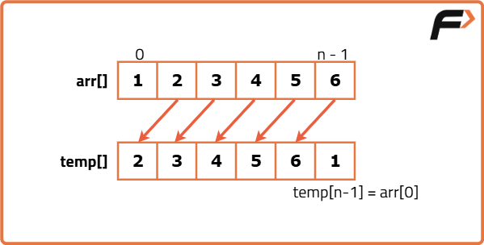

Left Rotate the Array by One
Problem Statement:
Given an integer array nums, rotate the array to the left by one.
Note: There is no need to return anything, just modify the given array.
Examples
Example 1: Input: nums = [1, 2, 3, 4, 5] Output: [2, 3, 4, 5, 1] Explanation: Initially, nums = [1, 2, 3, 4, 5] Rotating once to the left results in nums = [2, 3, 4, 5, 1]. Example 2: Input: nums = [-1, 0, 3, 6] Output: [0, 3, 6, -1] Explanation: Initially, nums = [-1, 0, 3, 6] Rotating once to the left results in nums = [0, 3, 6, -1].
Disclaimer: Here is the practice link to help you assess your knowledge better. It's highly recommend trying to solve it before looking at the solution.
Brute Force
Algorithm
- Create a dummy array of the same length as the original array.
- Shift all elements in the original array toward the left, copying them into the dummy array.
- After shifting, place the value of the 0th index of the original array into the last element of the dummy array.
- Finally, print the dummy array which now contains the left-shifted elements with the 0th element moved to the last position.
Code
#include<bits/stdc++.h>
using namespace std;
// Function to solve and shift array elements left by one position
void solve(int arr[], int n) {
int temp[n]; // Create a temporary array to store the shifted elements
// Shift the elements to the left by one position
for (int i = 1; i < n; i++) {
temp[i - 1] = arr[i];
}
temp[n - 1] = arr[0]; // The first element moves to the last position
// Print the rotated array
for (int i = 0; i < n; i++) {
cout << temp[i] << " "; // Print each element of the rotated array
}
cout << endl;
}
int main() {
int n = 5; // Size of the array
int arr[] = {1, 2, 3, 4, 5}; // Original array
solve(arr, n); // Call the solve function to rotate and print the result
return 0;
}Complexity Analysis
Time Complexity: O(N), where N is the size of the array. This is because we traverse the array once to shift the elements.
Space Complexity: O(N), as we are using a temporary array of the same size as the input array to store the shifted elements.
Optimal Approach
Algorithm
- Store the value of the first element of the array in a temporary variable.
- Iterate through the array starting from the second element.
- Shift each element one position to the left by assigning the current element to the position of its predecessor.
- After completing the iteration, place the value from the temporary variable into the last position of the array.

Code
#include<bits/stdc++.h>
using namespace std;
class Solution {
public:
void rotateArrayByOne(vector<int>& nums) {
// Store the first element in a temporary variable
int temp = nums[0];
// Shift elements to the left
for (int i = 1; i < nums.size(); ++i) {
nums[i - 1] = nums[i];
}
// Place the first element at the end
nums[nums.size() - 1] = temp;
}
};
int main() {
Solution solution;
vector<int> nums = {1, 2, 3, 4, 5};
solution.rotateArrayByOne(nums);
for (int num : nums) {
cout << num << " "; // Output the rotated array
}
return 0;
}Complexity Analysis
Time Complexity: O(N), where N is the size of the input array. This is because we traverse the array once to shift the elements.
Space Complexity: O(1), as we are using only a constant amount of extra space for the temporary variable.